B200 lendab LiPo akuga. See on võimas, aga vajab hoolt. Hea laadimine tähendab, et aku kestab kaua ja keegi ei saa viga.
Meie aku
Kasutame peaaegu alati sama akut, sest see mahub drooni akuhoidjasse. LiPo tähendab liitiumpolümeeri: võimas, aga vajab hoolt. 550 mAh on mahtuvus ehk kui palju energiat akusse mahub. 2S tähendab kaht elementi järjest (2 × 3,7 V = 7,4 V), täis laetuna 8,4 V. Akul on valge 3-pin JST-XH pistik, millega ühendad aku nii drooni kui ka laadija külge.
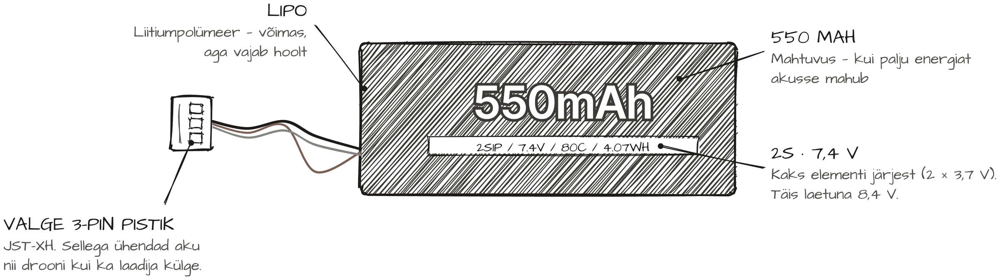
Laadimine originaallaadijaga
Komplektis olev USB-laadija laeb ühte akut korraga ja täislaadimine võtab umbes tund aega. Lase akul pärast lendu 10 kuni 15 minutit jahtuda, ühenda laadija USB-laadijasse või arvutisse ja siis aku laadija külge. Punane tuli tähendab, et aku laeb. Kui punane kustub ja roheline süttib, on aku täis: võta see kohe laadijast ära.
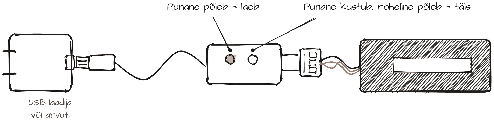
VIFLY ToothStor 2S
VIFLY ToothStor 2S on lisalaadija, mis laeb neli akut korraga. Ekraani ülaribal on vool, pinge elemendi kohta ja toitepinge, all iga kanali aku pinge, vool ja elemendid. Päike on punane, kui aku laeb, ja roheline, kui aku on täis, ning siis laadija piiksub. START/STOP nupp seab voolu, BEEP nupp pinge. Igal kanalil on kaks pesa, meie aku läheb valgesse (JST-XH), ja ühe kanali kohta käib üks aku. Akud ei pea olema ühesugused. Toide on 10 kuni 26 V: USB-C PD 3.0 (vähemalt 65 W), DC-pesa 5,5 × 2,1 mm või XT60 kaudu 3S kuni 6S LiPo aku. Tavaline telefonilaadija ei sobi.
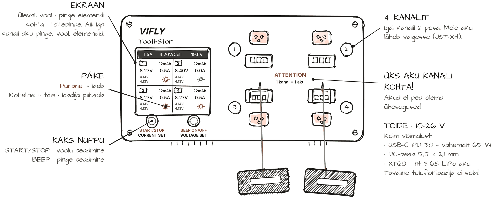
VIFLY seaded B200 akule
B200 aku jaoks sea vooluks (CURRENT SET) 0,5 A, see on 1C 550 mAh akule. Pingeks (VOLTAGE SET) vali 4.20V/Cell, mis laeb aku täis (8,4 V), või 3.80V/Cell hoiustamiseks. Ära kasuta seadet 4.35V/Cell: see on LiHV akudele. Tee nii: ühenda laadija toitega, kontrolli ekraani ülaribal voolu ja pinget, ühenda akud (igasse kanalisse üks) ja vajuta START/STOP. Kui laadija piiksub, võta akud kohe lahti. Kui akusid paar päeva või kauem ei kasuta, lae või tühjenda need 3.80V/Cell peale: nii elavad need kauem.
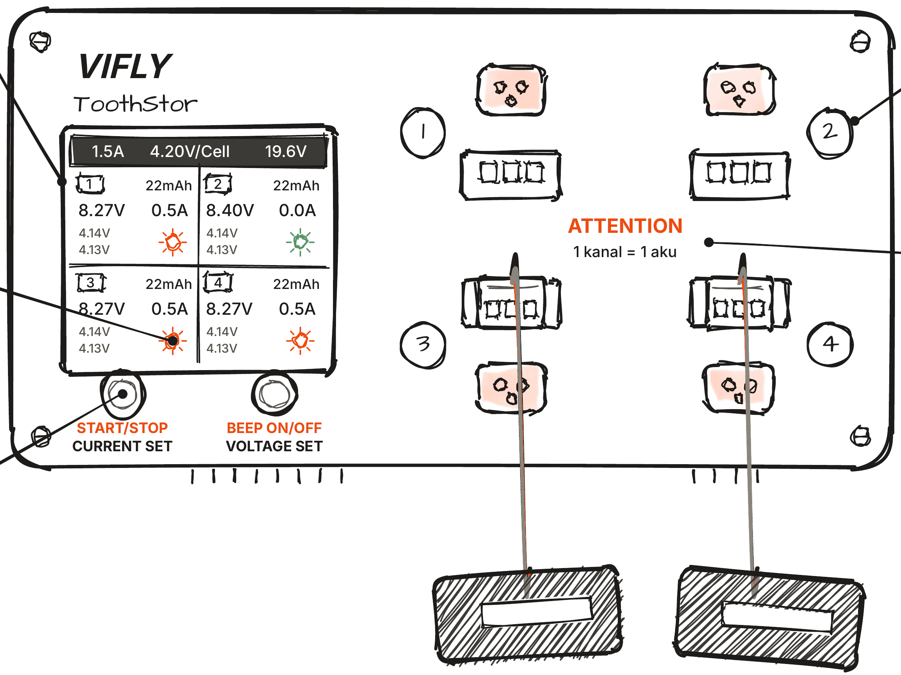
Teised laadijad ja puldi patareid
Sobib iga laadija, mis oskab laadida 2S LiPo akusid, aga loe enne juhend läbi: vali õige akutüüp (LiPo), elementide arv (2S) ja vool (kuni 0,5 A). Vale seadistus võib aku rikkuda või süüdata. Meie akul on ainult valge 3-pin pistik ja laadija peab oskama laadida selle kaudu: paljud suured laadijad vajavad eraldi toitepistikut ja nendega seda akut laadida ei saa. Pult töötab nelja AA patareiga, mis komplektis ei ole. Sobivad nii tavalised kui laetavad (NiMH). Pane need sisse õigetpidi, ära sega vanu ja uusi ega tavalisi ja laetavaid, ja kui pult piiksub, vaheta või lae patareid. Tühjad patareid vii kogumiskasti, mitte prügikasti.
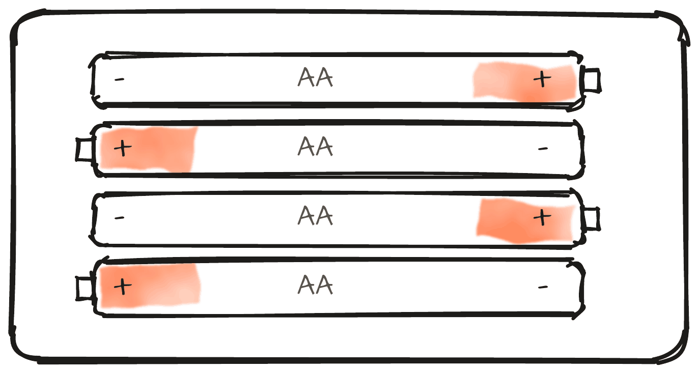
LiPo ohutus
Laadimise ajal peab keegi kogu aeg kohal olema. Kui aku on täis, ühenda see lahti: ära jäta akut laadijasse ega drooni külge. Laadi LiPo-kotis või kivi- ja metallpinnal, mitte vaibal, voodil ega puitlaual. Soe aku ei lähe laadimisse, laadi 0 kuni 40 °C juures. Paisunud, mõlkis või katkise juhtmega akut ära laadi ega lenda, vaid anna see treenerile. Kui pult piiksub kolm korda, on aku tühi: maandu, sest liiga tühjaks lennatud aku saab kahjustada. Hoia akusid jahedas, mitte päikese käes, autos ega radiaatori juures. Kui aku on kuum, suitseb või lõhnab, ära puuduta seda: vii inimesed eemale ja kutsu kohe täiskasvanu. Vanad akud ja tühjad patareid ei käi prügikasti. Akude ohutusest on lähemalt ohutusjuhendis.
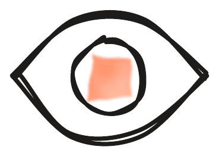
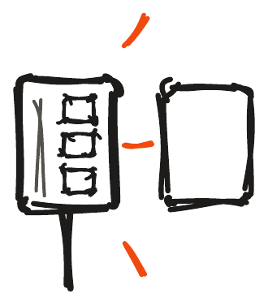
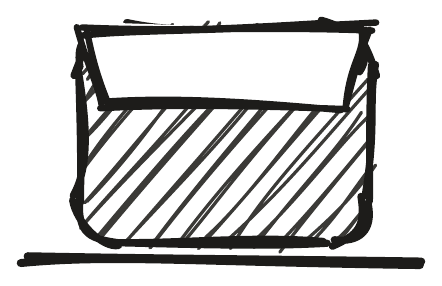
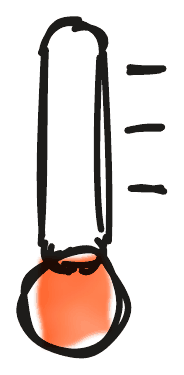
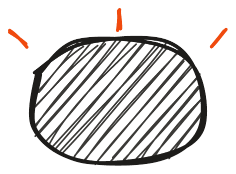

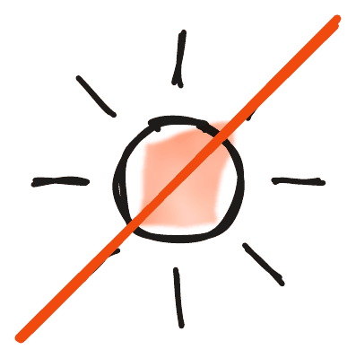
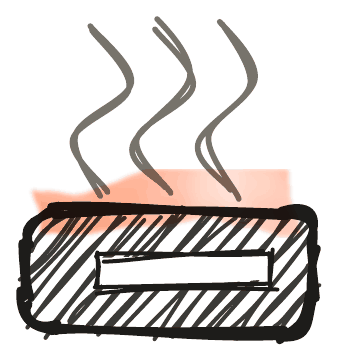
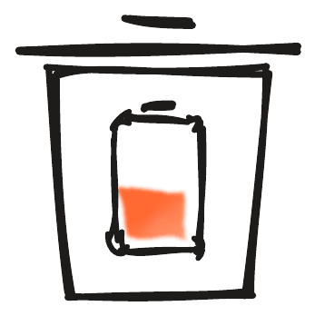
Jahuta, lae järelevalve all, täis? Lahti!
Loe
- Ohutus: akud ja tulekahju
- Varustus
akud ja laadijad droonijalka.ee lehel - jalkadroon.ee
droonid, akud, laadijad ja varuosad
Treenerile: 10 minuti plaan
| Aeg | Slaid | Mida rääkida |
|---|---|---|
| 0:00 | Pealkiri | Näita üht akut. „Mis siin peal kirjas on? 550 mAh, 2S, 7,4 V, 80C: mida need tähendavad?“ |
| 0:40 | Joon. 1: Meie aku | Loe akult kiri ette: LiPo, 550 mAh, 2S, 7,4 V. Näita valget 3-pin pistikut: sellega käib aku nii drooni kui ka laadija külge. |
| 2:08 | Joon. 2: Laadimine originaallaadijaga | Komplektis olev USB-laadija laeb ühte akut korraga ja täislaadimine võtab umbes tund aega. Lase akul pärast lendu 10 kuni 15 minutit jahtuda, ühenda laadija USB-laadijasse või arvutisse ja siis aku laadija külge. Punane tuli tähendab, et aku laeb. Kui punane kustub ja roheline süttib, on aku täis: võta see kohe laadijast ära. |
| 3:37 | Joon. 3: VIFLY ToothStor 2S | Näita laadijal: ekraan (üleval seaded, all iga kanali aku), päike (punane laeb, roheline täis), kaks nuppu, neli kanalit ja toide. Tavaline telefonilaadija ei sobi! |
| 5:05 | Joon. 4: VIFLY seaded B200 akule | B200 aku jaoks sea vooluks (CURRENT SET) 0,5 A, see on 1C 550 mAh akule. Pingeks (VOLTAGE SET) vali 4.20V/Cell, mis laeb aku täis (8,4 V), või 3.80V/Cell hoiustamiseks. Ära kasuta seadet 4.35V/Cell: see on LiHV akudele. Tee nii: ühenda laadija toitega, kontrolli ekraani ülaribal voolu ja pinget, ühenda akud (igasse kanalisse üks) ja vajuta START/STOP. Kui laadija piiksub, võta akud kohe lahti. Kui akusid paar päeva või kauem ei kasuta, lae või tühjenda need 3.80V/Cell peale: nii elavad need kauem. |
| 6:33 | Joon. 5: Teised laadijad ja puldi patareid | Sobib iga laadija, mis oskab laadida 2S LiPo akusid, aga loe enne juhend läbi: vali õige akutüüp (LiPo), elementide arv (2S) ja vool (kuni 0,5 A). Vale seadistus võib aku rikkuda või süüdata. Meie akul on ainult valge 3-pin pistik ja laadija peab oskama laadida selle kaudu: paljud suured laadijad vajavad eraldi toitepistikut ja nendega seda akut laadida ei saa. Pult töötab nelja AA patareiga, mis komplektis ei ole. Sobivad nii tavalised kui laetavad (NiMH). Pane need sisse õigetpidi, ära sega vanu ja uusi ega tavalisi ja laetavaid, ja kui pult piiksub, vaheta või lae patareid. Tühjad patareid vii kogumiskasti, mitte prügikasti. |
| 8:02 | Joon. 6: LiPo ohutus | Laadimise ajal peab keegi kogu aeg kohal olema. Kui aku on täis, ühenda see lahti: ära jäta akut laadijasse ega drooni külge. Laadi LiPo-kotis või kivi- ja metallpinnal, mitte vaibal, voodil ega puitlaual. Soe aku ei lähe laadimisse, laadi 0 kuni 40 °C juures. Paisunud, mõlkis või katkise juhtmega akut ära laadi ega lenda, vaid anna see treenerile. Kui pult piiksub kolm korda, on aku tühi: maandu, sest liiga tühjaks lennatud aku saab kahjustada. Hoia akusid jahedas, mitte päikese käes, autos ega radiaatori juures. Kui aku on kuum, suitseb või lõhnab, ära puuduta seda: vii inimesed eemale ja kutsu kohe täiskasvanu. Vanad akud ja tühjad patareid ei käi prügikasti. Akude ohutusest on lähemalt ohutusjuhendis. |
| 9:30 | Jäta meelde | „Jahuta, lae järelevalve all, täis? Lahti!“ |
Demo: Laadige üks aku VIFLY laadijaga koos läbi: seaded ekraanil, aku kanalisse, START/STOP, ja kui piiksub, kohe lahti.